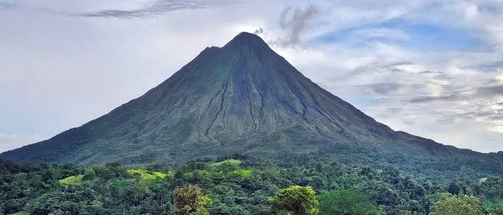

Volcán Arenal

Descripción
El Volcán Arenal es el volcán más famoso de Costa Rica. Aunque actualmente está en una fase de relativa calma, sus coladas de lava antiguas y los senderos únicos hacen de este un destino imprescindible. Desde aquí se pueden ver vistas panorámicas espectaculares y explorar un ecosistema volcánico único.
Información del Destino
- Ubicación: La Fortuna, Alajuela
- Altura del volcán: 1633 metros
- Mejor época para visitar: Diciembre a marzo (menos lluvia)
- Clima: Tropical con temperaturas templadas en altura
- Precio de entrada: $15 por persona (no residentes)
Actividades Disponibles
- Senderismo en la zona volcánica
- Observación de miradores del volcán
- Baño en aguas termales naturales
- Fotografía de fauna y paisajes volcánicos
- Relajación en spas naturales
- Observación de aves y fauna
Lo que Debes Saber
- El terreno puede ser irregular debido a las coladas de lava
- Usa botas de senderismo resistentes
- El clima puede cambiar rápidamente - trae chaqueta
- Los senderos varían en dificultad (fácil a moderado)
- Las aguas termales tienen temperatura entre 38-42°C
- Se recomienda ir con guía local certificado
Testimonios
"Una experiencia geológica única. Ver el volcán de cerca y caminar sobre antiguas coladas es verdaderamente especial." - Francisco Méndez
"Las aguas termales fueron lo mejor. Después de caminar todo el día, fue perfecto relajarse en las piscinas naturales." - Patricia Sánchez
Reserva tu Experiencia
Para reservar tu visita al Volcán Arenal, por favor:
- Regresa a la página principal
- Completa el formulario de contacto
- Selecciona "Volcán Arenal" como destino
- Recibirás confirmación en tu correo electrónico